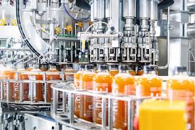

En Impulso elaboramos kombucha de forma artesanal, cuidando cada paso del proceso. La fermentación se realiza de manera natural durante varios días, en un entorno controlado. Utilizamos ingredientes de calidad, sin aditivos ni pasteurización, para conservar sus propiedades. Cada botella es envasada a mano, con atención al detalle y respeto por el producto. Así nace nuestra kombucha: viva, refrescante y hecha con dedicación en España.
